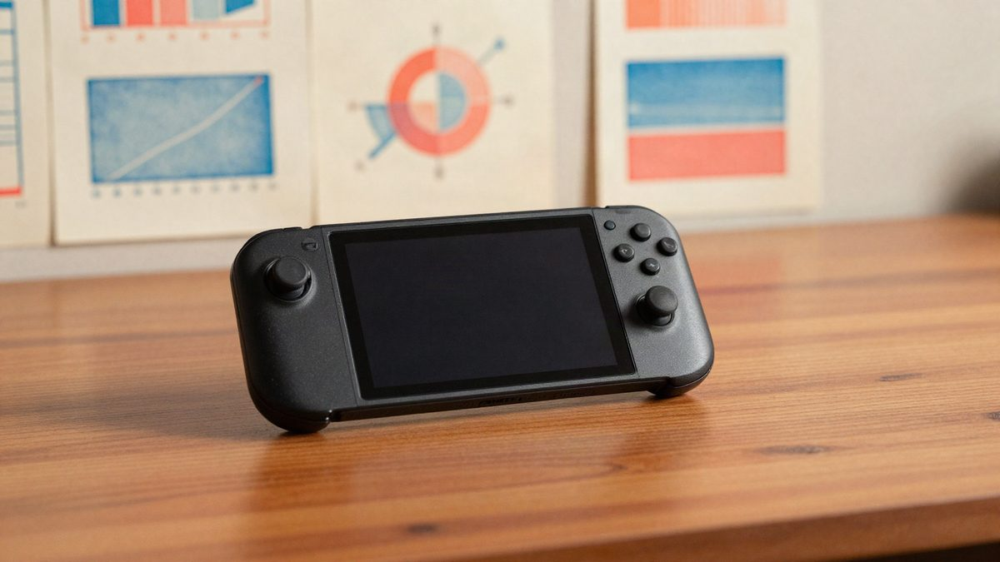

Steam testira prikaz prosječnog FPS-a u igrama prije kupnje, zasad na Steam Decku

Valve testira novu značajku na Steamu koja prije kupnje prikazuje prosječan broj sličica u sekundi u igri, na temelju stvarnog igranja drugih igrača. Zasad radi samo za Steam Deck, uz grafikon raspodjele rezultata. Proširenje na druge uređaje je planirano, a datum šire distribucije nije potvrđen.
Valve testira novu značajku na Steamu koja prije kupnje prikazuje prosječan broj sličica u sekundi (FPS) u pojedinoj igri. Prikaz se temelji na podacima iz stvarnog igranja, a zasad je ograničen na Steam Deck.
Vlasnici Steam Decka tako mogu vidjeti kakve su performanse u određenoj igri imali drugi igrači s istim uređajem. To može pomoći pri odluci o kupnji, osobito kod zahtjevnijih naslova.
Kako se podaci prikupljaju
Podaci se prikupljaju anonimno i samo od igrača koji su dobrovoljno pristali na dijeljenje. Valve ne prikazuje samo jednu prosječnu vrijednost nego i grafikon raspodjele rezultata, pa se vidi koliko se performanse razlikuju među igračima.
Raspodjela je važna jer FPS ovisi o grafičkim postavkama, rezoluciji i drugim čimbenicima. Čak i na uređajima s identičnim hardverom rezultati se mogu razlikovati, pa jedna prosječna brojka ne bi bila dovoljna.
Što je s drugim uređajima
Valve planira prikaz FPS-a proširiti i na druge uređaje. Kako će usporedba funkcionirati na standardnim računalima, koja se jako razlikuju po procesorima, grafičkim karticama i RAM-u, nije jasno. Kod Steam Decka taj problem ne postoji jer svi imaju isti hardver.
Značajku već sad mogu isprobati vlasnici Steam Decka koji koriste beta verziju Steamovog klijenta. Datum šire distribucije Valve još nije potvrdio.
Izvor: Bug.hr